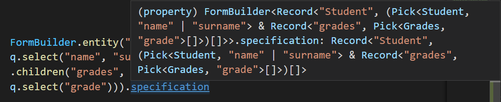
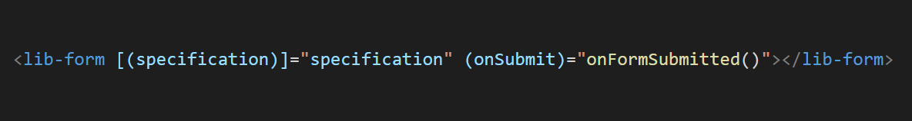

View the repository on GitHub.
View the repository on GitHub.
This is the hand-in for the typesafe form builder assignment of the software engineering minor at Hogeschool Rotterdam. There are two renderers for this form builder. One using Angular, and one using React. With the links below you can see these two renderers in action.
A form specification can be constructed using the FormBuilder object, and the functions entity, select, child and children. The implemented type safety combined with the Typescript autocomplete features in Visual Studio Code allow the developer to quickly setup a form specification.
In Visual Studio Code we can now hover over the specification property of the formbuilder, to see that the type of the specification has been infered from the given input.
Finally we can give this specification object to either the Angular or React render component. For Angular, the <lib-form> component has an input attribute "specification" that takes the form builder's specification object as input.
(Team 14 within the software engineering minor.)
View the repository on GitHub.
The project consists of three packages. Each contained in a folder in the root of the repository. First, the typesafe-form-builder package, which contains all functions and interfaces needed to build a form specification in a type safe way.
The type-safe-formbuilder package is used as a dependency by the angular-form-builder and react-form-builder packages. Both of these contain components to render the specification, and handle user input.